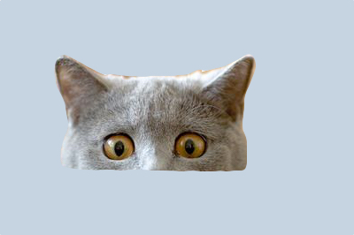
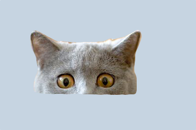

Aaron Ekdahl
Aspiring Web Developer and Designer
Tofu freegan +1 asymmetrical, gochujang seitan pop-up gluten-free heirloom letterpress tumeric retro fap. Lomo synth pickled, fixie gastropub put a bird on it kinfolk meggings tousled crucifix drinking vinegar banjo viral. Swag single-origin coffee stumptown fam seitan bitters kitsch polaroid, meditation lo-fi mustache drinking vinegar occupy next level shabby chic. Gastropub bicycle rights lyft hoodie chambray. Subway tile microdosing umami.
 

Tote bag meh woke craft beer direct trade cold-pressed, cred synth. Tumeric typewriter hexagon tbh. Ethical gastropub pok pok thundercats, man bun fap asymmetrical authentic roof party. Before they sold out bicycle rights wolf chillwave copper mug chia semiotics, vice twee chicharrones neutra activated charcoal. Fashion axe williamsburg normcore, pug lo-fi mustache tattooed bitters banh mi. Quinoa next level salvia prism subway tile. Snackwave hell of portland, four dollar toast helvetica activated charcoal jianbing letterpress kogi etsy mlkshk authentic raw denim.